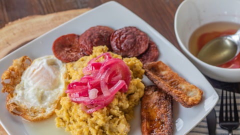
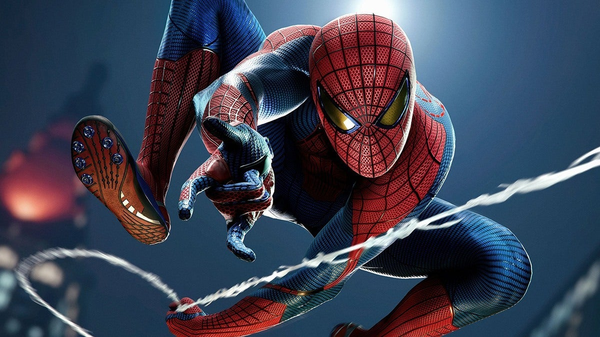
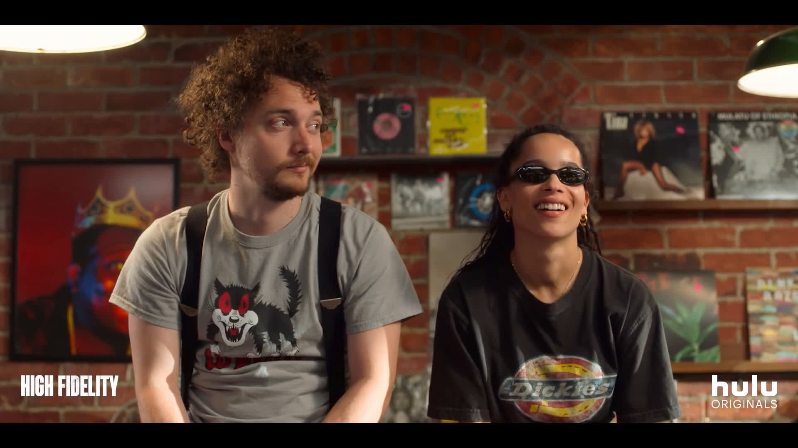
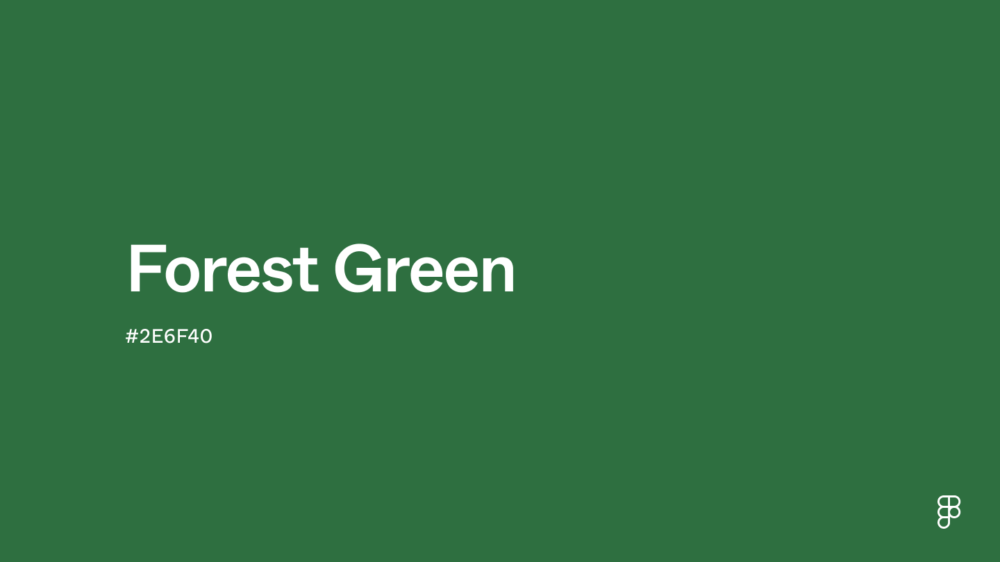

I was born in Chicago, Illinois - May 12, 2002 on Mother's day

I listen to all kinds of music, but lately, I’ve been really into Alternative.
There's something about the energy and emotion in the genre that draws me in.
Right now, I’m into All These Things That I've Done by The Killers, and Ode to the Mets
by The Strokes has a sound that sticks with me—it's nostalgic and fresh at the same time.
Double Negative by Dominic Fike has also been a favorite, with a laid-back vibe that's
easy to relax to. Lately, Alternative just fits my mood, though I'm always up for finding
new music.

Food has always been a huge part of my life—it’s not just about eating,
but about the experience and joy that comes with it. I especially love the
flavors from my culture in the Dominican Republic, like Mangu, Arroz con Habichuela,
Arroz con Guandules, Tostones, and Jibaritos. These dishes are comforting and full of tradition.
But being a Chicago native, I’ve also developed a love for Italian beefs and Chicago-style hotdogs.
Food for me is a way to connect with my roots, experience new flavors, and share moments with others.

I love Spider-Man because he feels so real. He’s not just a superhero—he’s someone
who struggles with everyday stuff like school, work, and relationships, all while
trying to do the right thing. What makes him stand out is that he doesn’t have it all
figured out, and yet he still manages to fight for what’s important. His determination
to keep going, even when life gets tough, is something I really connect with.
It’s like a reminder that you don’t need to be perfect to make a difference.

My favorite shows are a mix of different vibes, but they all hold a special place.
High Fidelity is one I can always go back to—its blend of music, relationships, and
personal growth really speaks to me, and I love the way the main character navigates
through life and love. Avatar: The Last Airbender is another one that never gets old.
The world-building, incredible characters, and the depth of the story always keep me hooked.
Then there's The OC, with its mix of drama and humor; it captures the ups and downs of growing
up in a way that's both relatable and engaging. Lastly, New Girl is my go-to for a good laugh.
The quirky characters and feel-good moments are just the perfect escape. Each of these shows
brings something different, but they all have that way of sticking with me.

Favorite color: Forest Green